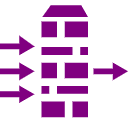
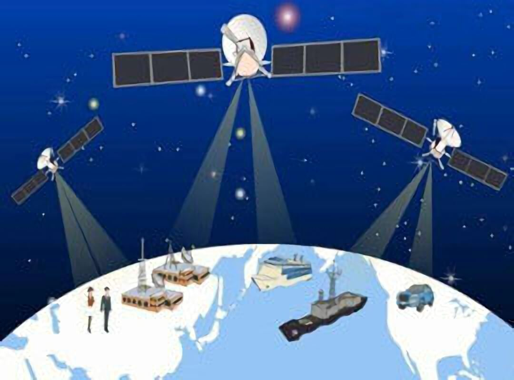

特 征
Characteristic
整体感知
RFID、传感器、二维码
随时随地智能感知获取物体信息
信息采集、协同处理、智能组网

可靠传输
无线通信网络、5G技术
互联网、无线网络相融合
实时、准确传输信息
智能处理
云计算、模糊识别
跨地域、跨行业、跨部门
智能化监测与控制
应 用
Application
物联网的应用领域涉及到方方面面，在工业、农业、环境、交通、物流、安保等基础设施领域的应用，有效的推动了这些方面的智能化发展，使得有限的资源更加合理的使用分配，从而提高了行业效率、效益。
在家居、医疗健康、教育、金融与服务业、旅游业等与生活息息相关的领域的应用，从服务范围、服务方式到服务的质量等方面都有了极大的改进，大大的提高了人们的生活质量;

颠覆传统
没有做不到
只有想不到
万物互联
物物相连
走向未来
在涉及国防军事领域方面，虽然还处在研究探索阶段，但物联网应用带来的影响也不可小觑，大到卫星、导弹、飞机、潜艇等装备系统，小到单兵作战装备，物联网技术的嵌入有效提升了军事智能化、信息化、精准化，极大提升了军事战斗力，是未来军事变革的关键。
关 键 技 术
Key Technology
射频识别技术
射频识别（RFID）的原理是阅读器与标签之间进行非接触式的数据通信，达到识别目标的目的。
RFID 的应用非常广泛，典型应用有动物晶片、汽车晶片防盗器、门禁管制、停车场管制、生产线自动化、物料管理。
传感网
MEMS，微机电系统，是由微传感器、微执行器、信号处理和控制电路、通讯接口和电源等部件组成的一体化的微型器件系统。
MEMS的目标是把信息的获取、处理和执行集成在一起，组成具有多功能的微型系统，集成于大尺寸系统中，从而大幅度地提高系统的自动化、智能化和可靠性水平。
M2M系统框架
M2M是Machine-to-Machine / Man的简称，是一种以机器终端智能交互为核心的、网络化的应用与服务。它将使对象实现智能化的控制。
M2M技术涉及5个重要的技术部分：机器、M2M硬件、通信网络、中间件、应用。基于云计算平台和智能网络，可以依据传感器网络获取的数据进行决策，改变对象的行为进行控制和反馈。
云计算
云计算旨在通过网络把多个成本相对较低的计算实体整 合成一个具有强大计算能力的完美系统，并借助先进的商业模式让终端用户可以得到这些强大计算能力的服务。
物联网感知层获取大量数据信息，在经过网络层传输以后，放到一个标准平台上，再利用高性能的云计算对其进行处理，赋予这些数据智能，最终转换成对终端用户有用的信息。
 鄂公网安备 42011102003698号
鄂公网安备 42011102003698号